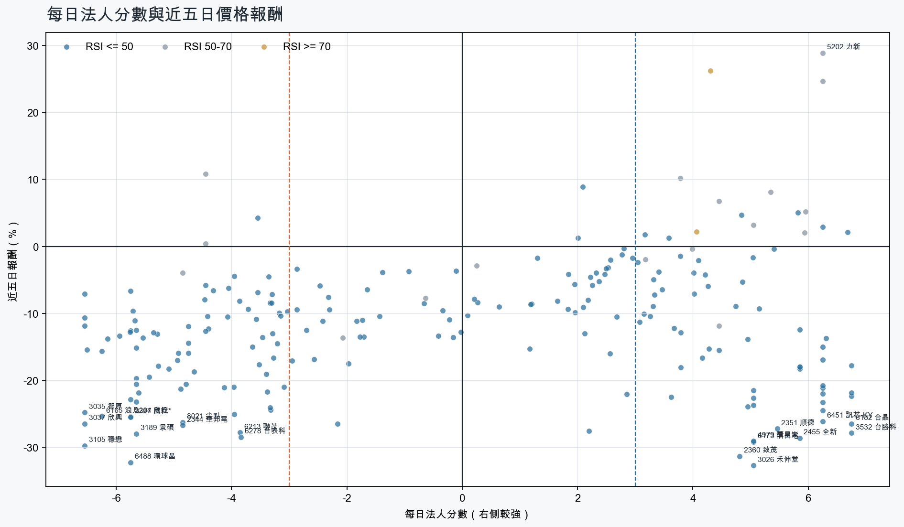
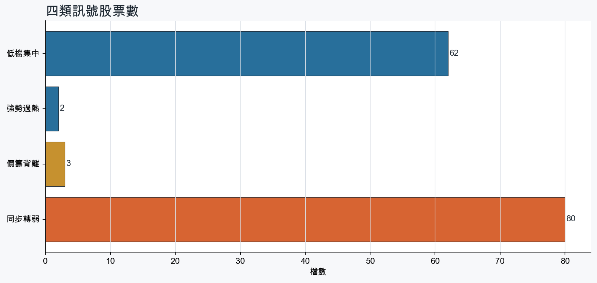
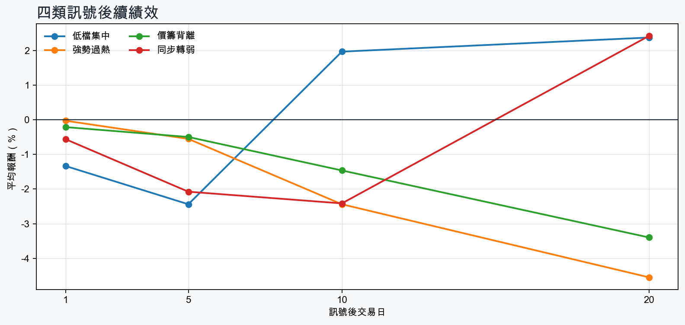

市場情緒偏空
近5日法人合計-11,511,539 張
篩選池上漲比例9.5%
籌碼好 / RSI低15 檔
籌碼差 / 價跌15 檔



EPS × PE VALUATION
法人常用的相對估值
顯示保守、基準與樂觀估值帶，不把單一數字包裝成精準目標價。
最新累計 EPS 依季數年化 × 同產業有效 P/E 的 Q25／中位數／Q75。排除本公司、非正 P/E，並以 1.5×IQR 排除離群值。估值帶是公開資料篩選值，不是法人目標價；未使用分析師預估 EPS。
MOOD × MONEY
情緒與籌碼雷達
熱度代表被討論程度；情緒分與法人方向分開計算。熱門不等於適合追價，樣本不足也不硬判多空。
| 股票 | 情緒 | 討論熱度 | 情緒 × 籌碼 | 情緒 × 基本面 |
|---|---|---|---|---|
| 6488 環球晶同步轉弱 | 情緒低迷 -53.6信心 100 | 1002 篇 / 337 留言 / 3 則新聞 | 情籌雙弱法人分 -5.8 | 基本面與情緒雙弱基本面分 -1.1 |
| 3105 穩懋同步轉弱 | 情緒低迷 -71.1信心 71 | 681 篇 / 39 留言 / 3 則新聞 | 情籌雙弱法人分 -6.5 | 基本面佳、情緒悲觀基本面分 +2.0 |
| 3037 欣興同步轉弱 | 中性分歧 -10.6信心 68 | 631 篇 / 24 留言 / 3 則新聞 | 情籌混合法人分 -6.5 | 基本面與情緒分歧基本面分 +3.6 |
| 6213 聯茂同步轉弱 | 中性分歧 -11.2信心 53 | 531 篇 / 7 留言 / 3 則新聞 | 情籌混合法人分 -3.9 | 基本面與情緒分歧基本面分 +2.0 |
| 6278 台表科同步轉弱 | 偏多 +22.8信心 39 | 461 篇 / 2 留言 / 2 則新聞 | 熱門但法人撤退法人分 -3.8 | 基本面與情緒共振基本面分 +2.4 |
| 3189 景碩同步轉弱 | 中性分歧 +9.9信心 30 | 390 篇 / 0 留言 / 3 則新聞 | 情籌混合法人分 -5.7 | 基本面與情緒分歧基本面分 +3.6 |
| 2327 國巨*同步轉弱 | 偏空 -29.7信心 30 | 390 篇 / 0 留言 / 3 則新聞 | 情籌雙弱法人分 -5.8 | 基本面佳、情緒悲觀基本面分 +2.0 |
| 8021 尖點同步轉弱 | 偏多 +29.7信心 30 | 390 篇 / 0 留言 / 3 則新聞 | 熱門但法人撤退法人分 -4.8 | 基本面與情緒共振基本面分 +2.0 |
| 2344 華邦電同步轉弱 | 中性分歧 +0.0信心 30 | 390 篇 / 0 留言 / 3 則新聞 | 情籌混合法人分 -4.8 | 基本面與情緒分歧基本面分 +3.6 |
| 2408 南亞科同步轉弱 | 偏空 -29.7信心 30 | 390 篇 / 0 留言 / 3 則新聞 | 情籌雙弱法人分 -3.3 | 基本面佳、情緒悲觀基本面分 +3.6 |
| 2465 麗臺價籌背離 | 偏多 +29.7信心 30 | 390 篇 / 0 留言 / 3 則新聞 | 熱門但法人撤退法人分 -4.5 | 基本面與情緒分歧基本面分 +0.2 |
| 2412 中華電強勢過熱 | 中性分歧 +0.0信心 30 | 390 篇 / 0 留言 / 3 則新聞 | 情籌混合法人分 +4.1 | 基本面與情緒分歧基本面分 +2.0 |
01
籌碼好 / RSI低
優先研究基本面；法人續買且價格止穩時，才適合分批觀察。
| 股票 / 確認狀態 | 每日法人分 | 浦男式近似 | 法人加速度 | RSI / 相對強弱 | 量價確認 | 融資融券 | 每週集保確認 | 基本面 | EPS × 同業 P/E 估值 | 情緒 / 情籌 | 近期消息 | 論壇討論 |
|---|---|---|---|---|---|---|---|---|---|---|---|---|
| 2618 長榮航可研究 · 100 分籌碼與價格確認，可列研究清單 | +6.7法人 +53,052 張 / 5 天 | 命中 · 93站上月線；中期均線偏多；法人籌碼偏多；留意法人買盤未加速 | -5,140 張近3日 +27,196 / 連續 +7 日 | 49.3相對大盤 +24.2% | 量比 1.51確認分 +3.3法人買盤減速 | -%融資 - 張 / 融券 - 張 | +0.89 pp1000張 +0.96 pp | 單月營收年增 +32.9%；累計營收年增 +19.5%仍需觀察下一期財報延續性來源：公開資訊觀測站 | 不適用最新財報缺少可年化 EPS | 偏多 +29.7熱度 39 / 信心 30情籌共振 | 年底旅遊旺季商機爆發！長榮航9月客貨運營收雙成長 股價連4紅、累計上漲5.62%奪強勢股王Yahoo股市 · 11/06【即時新聞】今日長榮航受惠AI伺服器搶運潮，股價大漲3.09%創波段新高！CMoney投資網誌 · 11/05 | 近期沒有明確提及本股的論壇樣本 |
| 6757 台灣虎航可研究 · 100 分籌碼與價格確認，可列研究清單 | +5.8法人 +3,525 張 / 5 天 | 接近 · 90站上月線；法人籌碼偏多；法人買盤加速；留意中期均線未翻多 | +545 張近3日 +2,006 / 連續 +5 日 | 49.1相對大盤 +22.2% | 量比 2.18確認分 +4.520日線低於60日線 | -%融資 - 張 / 融券 - 張 | +0.15 pp1000張 +0.37 pp | 單月營收年增 +36.2%；累計營收年增 +24.1%仍需觀察下一期財報延續性來源：公開資訊觀測站 | 不適用最新財報缺少可年化 EPS | 偏多 +29.7熱度 39 / 信心 30情籌共振 | 個股：台灣虎航前三季EPS 5.07元，Q4樂觀看待客運需求，線上旅展促銷至9日富聯網 · 11/06【11:45 即時新聞】台灣虎航(6757)盤中續漲，主力與法人買盤成焦點CMoney投資網誌 · 11/05 | 近期沒有明確提及本股的論壇樣本 |
| 2886 兆豐金可研究 · 91 分籌碼與價格確認，可列研究清單 | +3.0法人 +40,435 張 / 5 天 | 命中 · 100站上月線；中期均線偏多；法人籌碼偏多 | +87 張近3日 +22,635 / 連續 +7 日 | 48.7相對大盤 +27.7% | 量比 1.59確認分 +4.5價格、量能與籌碼未見明顯弱項 | -%融資 - 張 / 融券 - 張 | +0.40 pp1000張 +0.43 pp | 單月營收年增 +16.5%；累計營收年增 +16.6%仍需觀察下一期財報延續性來源：公開資訊觀測站 | 不適用最新財報缺少可年化 EPS | 樣本不足 +0.0熱度 24 / 信心 10情緒樣本不足 | 【12:55 即時新聞】兆豐金(2886) 盤中續漲，金融股防禦買盤聚焦CMoney投資網誌 · 11/05 | 近期沒有明確提及本股的論壇樣本 |
| 4566 時碩工業等待確認 · 73 分籌碼有訊號，但價格尚未確認 | +5.8法人 +1,864 張 / 4 天 | 接近 · 63中期均線偏多；法人籌碼偏多；買超具延續性；留意未站月線、法人買盤未加速 | -1,914 張近3日 -292 / 連續 +2 日 | 34.1相對大盤 +12.0% | 量比 0.50確認分 -2.4收盤跌破20日線；成交量不足；法人買盤減速 | -%融資 - 張 / 融券 - 張 | +4.22 pp1000張 +3.19 pp | 單月營收年增 +44.6%；累計營收年增 +23.4%仍需觀察下一期財報延續性來源：公開資訊觀測站 | 不適用最新財報缺少可年化 EPS | 中性分歧 +0.0熱度 33 / 信心 20情籌混合 | 營收：時碩工業(4566)10月營收6億7514萬元，月增率1.19%，年增率61.70%富聯網 · 11/06《業績-電機》時碩工業10月營收為6.75億元，年增61.70%富聯網 · 11/06 | 近期沒有明確提及本股的論壇樣本 |
| 6179 亞通可研究 · 82 分籌碼與價格確認，可列研究清單 | +4.2法人 +1,682 張 / 3 天 | 接近 · 75中期均線偏多；法人籌碼偏多；法人買盤加速；留意未站月線、量能尚未確認 | +200 張近3日 +1,019 / 連續 +2 日 | 29.7相對大盤 +4.3% | 量比 0.81確認分 +1.3收盤跌破20日線 | -3.1%融資 -720 張 / 融券 -59 張 | +1.63 pp1000張 +2.30 pp | 單月營收年增 +139.5%；累計營收年增 +132.5%仍需觀察下一期財報延續性來源：公開資訊觀測站 | 不適用最新財報缺少可年化 EPS | 樣本不足 +0.0熱度 0 / 信心 0情緒樣本不足 | 近期沒有通過股票語境篩選的新聞 | 近期沒有明確提及本股的論壇樣本 |
| 3163 波若威等待確認 · 81 分籌碼有訊號，但價格尚未確認 | +6.8法人 +1,777 張 / 5 天 | 未命中 · 55法人籌碼偏多；法人買盤加速；買超具延續性；留意未站月線、中期均線未翻多 | +604 張近3日 +1,220 / 連續 +6 日 | 19.6相對大盤 -23.4% | 量比 1.55確認分 -0.4收盤跌破20日線；20日線低於60日線；近20日弱於大盤 | -5.0%融資 -334 張 / 融券 -1 張 | +0.03 pp1000張 -1.05 pp | 單月營收年增 +27.4%；累計營收年增 +18.9%；2026 Q3 累計 EPS 4.922026 Q3 累計營益率 3.1%來源：公開資訊觀測站 | 基準 NT$ 124.0估值帶 81.15–213.8現價 395.0 · 高於估值帶 · 距基準 -68.6%2026 Q3 累計 EPS 4.92 → 年化 6.56通信網路同業 P/E 12.37／18.90／32.59 · n=59 · 信心較高以 Q3 累計 EPS 年化，不等同分析師全年預估來源：TWSE／TPEx 每日本益比 | 樣本不足 +0.0熱度 0 / 信心 0情緒樣本不足 | 近期沒有通過股票語境篩選的新聞 | 近期沒有明確提及本股的論壇樣本 |
| 3703 欣陸可研究 · 86 分籌碼與價格確認，可列研究清單 | +3.8法人 +2,113 張 / 5 天 | 接近 · 86中期均線偏多；法人籌碼偏多；法人買盤加速；留意未站月線 | +460 張近3日 +1,266 / 連續 +5 日 | 50.0相對大盤 +26.0% | 量比 1.25確認分 +3.2收盤跌破20日線 | -%融資 - 張 / 融券 - 張 | +0.65 pp1000張 +0.28 pp | 單月營收年增 +89.3%；累計營收年增 +3.4%仍需觀察下一期財報延續性來源：公開資訊觀測站 | 不適用最新財報缺少可年化 EPS | 樣本不足 +9.9熱度 24 / 信心 10情緒樣本不足 | 《外資買超21-8》FB入息(530)、欣陸(527)、複合收(526)富聯網 · 11/06 | 近期沒有明確提及本股的論壇樣本 |
| 9904 寶成等待確認 · 79 分籌碼有訊號，但價格尚未確認 | +5.4法人 +26,211 張 / 4 天 | 接近 · 71中期均線偏多；法人籌碼偏多；買超具延續性；留意未站月線、法人買盤未加速 | -6,407 張近3日 +13,616 / 連續 +2 日 | 38.9相對大盤 +23.3% | 量比 1.54確認分 +0.5收盤跌破20日線；法人買盤減速 | -%融資 - 張 / 融券 - 張 | +1.68 pp1000張 +1.65 pp | 單月營收年增 +10.4%累計營收年增 -0.5%來源：公開資訊觀測站 | 不適用最新財報缺少可年化 EPS | 樣本不足 +0.0熱度 0 / 信心 0情緒樣本不足 | 近期沒有通過股票語境篩選的新聞 | 近期沒有明確提及本股的論壇樣本 |
| 2501 國建可研究 · 90 分籌碼與價格確認，可列研究清單 | +3.6法人 +5,024 張 / 4 天 | 接近 · 82站上月線；法人籌碼偏多；法人買盤加速；留意中期均線未翻多、基本面中性 | +4,461 張近3日 +4,980 / 連續 +3 日 | 47.4相對大盤 +19.8% | 量比 2.33確認分 +5.020日線低於60日線 | -%融資 - 張 / 融券 - 張 | -0.20 pp1000張 -0.21 pp | 累計營收年增 +26.5%單月營收年增 -44.8%來源：公開資訊觀測站 | 不適用最新財報缺少可年化 EPS | 樣本不足 +9.9熱度 24 / 信心 10情緒樣本不足 | 《投信買超8-4》國建(550)、聯發科(512)、興富發(487)富聯網 · 11/06 | 近期沒有明確提及本股的論壇樣本 |
| 3005 神基等待確認 · 76 分籌碼有訊號，但價格尚未確認 | +4.9法人 +3,295 張 / 5 天 | 接近 · 79中期均線偏多；法人籌碼偏多；買超具延續性；留意未站月線、法人買盤未加速 | -643 張近3日 +1,744 / 連續 +10 日 | 35.7相對大盤 +19.0% | 量比 1.55確認分 -0.3收盤跌破20日線；法人買盤減速 | -%融資 - 張 / 融券 - 張 | +1.41 pp1000張 +1.00 pp | 單月營收年增 +16.3%；累計營收年增 +10.7%仍需觀察下一期財報延續性來源：公開資訊觀測站 | 不適用最新財報缺少可年化 EPS | 樣本不足 +0.0熱度 0 / 信心 0情緒樣本不足 | 近期沒有通過股票語境篩選的新聞 | 近期沒有明確提及本股的論壇樣本 |
| 2615 萬海可研究 · 84 分籌碼與價格確認，可列研究清單 | +3.3法人 +9,872 張 / 4 天 | 接近 · 80中期均線偏多；法人籌碼偏多；法人買盤加速；留意未站月線、動能仍弱 | +5,497 張近3日 +9,062 / 連續 +1 日 | 28.6相對大盤 +16.7% | 量比 1.06確認分 +3.0收盤跌破20日線 | -%融資 - 張 / 融券 - 張 | +0.29 pp1000張 -0.15 pp | 單月營收年增 +97.6%；累計營收年增 +27.3%仍需觀察下一期財報延續性來源：公開資訊觀測站 | 不適用最新財報缺少可年化 EPS | 樣本不足 +0.0熱度 0 / 信心 0情緒樣本不足 | 近期沒有通過股票語境篩選的新聞 | 近期沒有明確提及本股的論壇樣本 |
| 1216 統一等待確認 · 78 分籌碼有訊號，但價格尚未確認 | +4.2法人 +20,742 張 / 5 天 | 接近 · 75中期均線偏多；法人籌碼偏多；買超具延續性；留意未站月線、法人買盤未加速 | -6,996 張近3日 +10,245 / 連續 +7 日 | 37.5相對大盤 +22.0% | 量比 1.35確認分 +1.0收盤跌破20日線；法人買盤減速 | -%融資 - 張 / 融券 - 張 | +0.75 pp1000張 +0.80 pp | 單月營收年增 +5.8%；累計營收年增 +4.2%；2026 Q3 累計 EPS 3.702026 Q3 累計營益率 5.8%來源：公開資訊觀測站 | 基準 NT$ 75.78估值帶 58.66–92.40現價 76.80 · 估值帶內 · 距基準 -1.3%2026 Q3 累計 EPS 3.70 → 年化 4.93食品工業同業 P/E 11.89／15.36／18.73 · n=23 · 信心較高以 Q3 累計 EPS 年化，不等同分析師全年預估來源：TWSE／TPEx 每日本益比 | 偏多 +29.7熱度 39 / 信心 30情籌共振 | 台股重挫1374點，統一收平、統一超跌1.38% 法人買賣不同調理財周刊 · 11/06統一前三季獲利同期新高- 日報工商時報 · 11/06 | 近期沒有明確提及本股的論壇樣本 |
| 8096 擎亞等待確認 · 79 分籌碼有訊號，但價格尚未確認 | +6.2法人 +3,667 張 / 5 天 | 未命中 · 55法人籌碼偏多；法人買盤加速；買超具延續性；留意未站月線、中期均線未翻多 | +2,977 張近3日 +3,072 / 連續 +5 日 | 18.8相對大盤 -9.8% | 量比 2.31確認分 -0.4收盤跌破20日線；20日線低於60日線；近20日弱於大盤 | -5.0%融資 -756 張 / 融券 +62 張 | +0.75 pp1000張 -0.70 pp | 單月營收年增 +393.2%；累計營收年增 +102.4%仍需觀察下一期財報延續性來源：公開資訊觀測站 | 不適用最新財報缺少可年化 EPS | 樣本不足 +0.0熱度 0 / 信心 0情緒樣本不足 | 近期沒有通過股票語境篩選的新聞 | 近期沒有明確提及本股的論壇樣本 |
| 2542 興富發等待確認 · 79 分籌碼有訊號，但價格尚未確認 | +4.0法人 +6,801 張 / 5 天 | 接近 · 70法人籌碼偏多；法人買盤加速；買超具延續性；留意未站月線、中期均線未翻多 | +406 張近3日 +4,995 / 連續 +7 日 | 31.7相對大盤 +17.6% | 量比 1.21確認分 +1.2收盤跌破20日線；20日線低於60日線 | -%融資 - 張 / 融券 - 張 | +0.56 pp1000張 +0.61 pp | 單月營收年增 +103.7%；累計營收年增 +228.4%仍需觀察下一期財報延續性來源：公開資訊觀測站 | 不適用最新財報缺少可年化 EPS | 樣本不足 +9.9熱度 24 / 信心 10情緒樣本不足 | 《投信買超8-4》國建(550)、聯發科(512)、興富發(487)富聯網 · 11/06 | 近期沒有明確提及本股的論壇樣本 |
| 9921 巨大等待確認 · 85 分籌碼有訊號，但價格尚未確認 | +4.8法人 +2,538 張 / 5 天 | 接近 · 68法人籌碼偏多；法人買盤加速；買超具延續性；留意未站月線、中期均線未翻多 | +1,482 張近3日 +2,061 / 連續 +9 日 | 37.3相對大盤 +18.0% | 量比 2.20確認分 +3.0收盤跌破20日線；20日線低於60日線 | -%融資 - 張 / 融券 - 張 | -0.03 pp1000張 -0.76 pp | 單月營收年增 +2.9%累計營收年增 -5.1%來源：公開資訊觀測站 | 不適用最新財報缺少可年化 EPS | 樣本不足 +0.0熱度 24 / 信心 10情緒樣本不足 | 運動休閒股逆勢抗跌！自行車雙雄巨大美利達漲逾4% 波力-KY亮燈漲停Yahoo股市 · 11/05 | 近期沒有明確提及本股的論壇樣本 |
02
籌碼好 / RSI高
趨勢強但不追價，等待量縮、RSI降溫或回測支撐。
| 股票 / 確認狀態 | 每日法人分 | 浦男式近似 | 法人加速度 | RSI / 相對強弱 | 量價確認 | 融資融券 | 每週集保確認 | 基本面 | EPS × 同業 P/E 估值 | 情緒 / 情籌 | 近期消息 | 論壇討論 |
|---|---|---|---|---|---|---|---|---|---|---|---|---|
| 1416 廣豐等待拉回 · 100 分等拉回，不追價 | +4.3法人 +1,783 張 / 3 天 | 接近 · 80站上月線；中期均線偏多；法人籌碼偏多；留意量能異常、RSI過熱 | +1,047 張近3日 +1,495 / 連續 +2 日 | 83.9相對大盤 +58.3% | 量比 7.03確認分 +5.3價格、量能與籌碼未見明顯弱項 | -%融資 - 張 / 融券 - 張 | +1.76 pp1000張 +0.98 pp | 單月營收年增 +70.5%；累計營收年增 +47.6%仍需觀察下一期財報延續性來源：公開資訊觀測站 | 不適用最新財報缺少可年化 EPS | 偏多 +19.8熱度 33 / 信心 20情籌混合 | 今日漲停股｜台股巨量震盪重挫1873點失守4萬點，元晶、廣豐、力新強攻亮燈1106｜豐雲學堂2026 年 11 月永豐金證券 · 11/06【10:35 即時新聞】廣豐(1416)盤中走強，買盤聚焦獲利成長題材CMoney投資網誌 · 11/06 | 近期沒有明確提及本股的論壇樣本 |
| 2412 中華電等待拉回 · 100 分等拉回，不追價 | +4.1法人 +25,314 張 / 5 天 | 接近 · 90站上月線；中期均線偏多；法人籌碼偏多；留意RSI過熱 | +11,480 張近3日 +22,374 / 連續 +10 日 | 81.8相對大盤 +32.7% | 量比 2.09確認分 +6.3價格、量能與籌碼未見明顯弱項 | -%融資 - 張 / 融券 - 張 | +0.49 pp1000張 +0.50 pp | 單月營收年增 +20.9%；累計營收年增 +10.8%仍需觀察下一期財報延續性來源：公開資訊觀測站 | 不適用最新財報缺少可年化 EPS | 中性分歧 +0.0熱度 39 / 信心 30情籌混合 | 台股6日遭血洗重挫1873點 中華電股價逆勢收漲1.24%理財周刊 · 11/06中華電董事會通過發行無擔保普通公司債，上限200億元台視全球資訊網 · 11/06 | 近期沒有明確提及本股的論壇樣本 |
03
籌碼差 / 股價上漲
可能是事件行情或軋空；沒有籌碼改善前避免追高。
| 股票 / 確認狀態 | 每日法人分 | 浦男式近似 | 法人加速度 | RSI / 相對強弱 | 量價確認 | 融資融券 | 每週集保確認 | 基本面 | EPS × 同業 P/E 估值 | 情緒 / 情籌 | 近期消息 | 論壇討論 |
|---|---|---|---|---|---|---|---|---|---|---|---|---|
| 2465 麗臺風險警示 · 74 分背離警戒，避免追高 | -4.5法人 -2,134 張 / 2 天 | 接近 · 74站上月線；中期均線偏多；法人買盤加速；留意法人籌碼偏弱、買超延續不足 | +1,708 張近3日 +107 / 連續 +2 日 | 66.0相對大盤 +47.3% | 量比 1.71確認分 +6.5價格、量能與籌碼未見明顯弱項 | -%融資 - 張 / 融券 - 張 | +7.69 pp1000張 +6.13 pp | 累計營收年增 +109.3%單月營收年增 -25.4%來源：公開資訊觀測站 | 不適用最新財報缺少可年化 EPS | 偏多 +29.7熱度 39 / 信心 30熱門但法人撤退 | 營收速報 - 麗臺(2465)10月營收11.45億元年增率高達340.58％｜新聞快訊｜豐雲學堂永豐金證券 · 11/06麗臺Q3獲利爆發！股價攻上125元漲停 創28個月新高自由財經 · 11/04 | 近期沒有明確提及本股的論壇樣本 |
| 6244 茂迪風險警示 · 26 分背離警戒，避免追高 | -3.5法人 -4,567 張 / 3 天 | 未命中 · 46買超具延續性；明顯強於大盤；基本面偏正向；留意未站月線、中期均線未翻多 | -4,468 張近3日 -4,600 / 連續 +1 日 | 45.6相對大盤 +11.8% | 量比 3.39確認分 -2.1收盤跌破20日線；20日線低於60日線；法人買盤減速 | +1.6%融資 +205 張 / 融券 +31 張 | -1.38 pp1000張 -0.94 pp | 單月營收年增 +0.6%；累計營收年增 +12.4%仍需觀察下一期財報延續性來源：公開資訊觀測站 | 不適用最新財報缺少可年化 EPS | 樣本不足 +0.0熱度 24 / 信心 10情緒樣本不足 | 【10:38 即時新聞】茂迪(6244)股價走強，太陽能本業與營收動能受關注CMoney投資網誌 · 11/06 | 近期沒有明確提及本股的論壇樣本 |
| 4720 德淵風險警示 · 39 分背離警戒，避免追高 | -4.5法人 -2,350 張 / 2 天 | 未命中 · 55中期均線偏多；明顯強於大盤；基本面有支撐；留意未站月線、法人籌碼偏弱 | -3,128 張近3日 -2,177 / 連續 +1 日 | 53.0相對大盤 +36.9% | 量比 0.53確認分 -0.8收盤跌破20日線；成交量不足；法人買盤減速 | -%融資 - 張 / 融券 - 張 | +5.14 pp1000張 +3.70 pp | 單月營收年增 +33.0%；累計營收年增 +16.4%仍需觀察下一期財報延續性來源：公開資訊觀測站 | 不適用最新財報缺少可年化 EPS | 樣本不足 +0.0熱度 0 / 信心 0情緒樣本不足 | 近期沒有通過股票語境篩選的新聞 | 近期沒有明確提及本股的論壇樣本 |
04
籌碼差 / 股價下跌
籌碼與價格同弱，原則上迴避，等待法人與大戶同時回補。
| 股票 / 確認狀態 | 每日法人分 | 浦男式近似 | 法人加速度 | RSI / 相對強弱 | 量價確認 | 融資融券 | 每週集保確認 | 基本面 | EPS × 同業 P/E 估值 | 情緒 / 情籌 | 近期消息 | 論壇討論 |
|---|---|---|---|---|---|---|---|---|---|---|---|---|
| 6488 環球晶風險警示 · 0 分迴避，等待籌碼翻正 | -5.8法人 -8,452 張 / 0 天 | 未命中 · 15量價健康；流動性足夠；留意未站月線、中期均線未翻多 | -1,856 張近3日 -5,808 / 連續 -10 日 | 13.9相對大盤 -37.5% | 量比 1.21確認分 -4.4收盤跌破20日線；20日線低於60日線；近20日弱於大盤；法人買盤減速 | -5.8%融資 -703 張 / 融券 -57 張 | -5.86 pp1000張 -7.48 pp | 尚無明確成長訊號單月營收年增 -13.1%；累計營收年增 -4.4%來源：公開資訊觀測站 | 不適用最新財報缺少可年化 EPS | 情緒低迷 -53.6熱度 100 / 信心 100情籌雙弱 | 環球晶跌停摔進5字頭！網翻哲哲「老天爺送禮」金句 股民崩潰：快被壓死了FTNN 新聞網 · 11/06環球晶10月營收47.64 億元TechNews 科技新報 · 11/06 | [新聞] 環球晶 國巨股價慘打3折 郭哲榮呼籲國安基PTT Stock · 11-05 · 251 留言[新聞] 環球晶跌逾6成還有戲？2027矽晶圓漲價潮來襲：5大投PTT Stock · 11-05 · 86 留言 |
| 3264 欣銓風險警示 · 6 分迴避，等待籌碼翻正 | -5.8法人 -5,592 張 / 0 天 | 未命中 · 35中期均線偏多；基本面有支撐；流動性足夠；留意未站月線、法人籌碼偏弱 | -194 張近3日 -3,855 / 連續 -8 日 | 15.7相對大盤 -13.9% | 量比 0.84確認分 -4.2收盤跌破20日線；近20日弱於大盤；法人買盤減速 | -0.7%融資 -95 張 / 融券 -38 張 | -6.87 pp1000張 -7.43 pp | 單月營收年增 +46.9%；累計營收年增 +35.4%；2026 Q3 累計 EPS 7.49仍需觀察下一期財報延續性來源：公開資訊觀測站 | 基準 NT$ 199.3估值帶 131.5–329.5現價 164.5 · 估值帶內 · 距基準 +21.2%2026 Q3 累計 EPS 7.49 → 年化 9.99半導體同業 P/E 13.17／19.96／32.99 · n=153 · 信心較高以 Q3 累計 EPS 年化，不等同分析師全年預估來源：TWSE／TPEx 每日本益比 | 樣本不足 +0.0熱度 24 / 信心 10情緒樣本不足 | 欣銓10月營收18.57 億元TechNews 科技新報 · 11/06 | 近期沒有明確提及本股的論壇樣本 |
| 3189 景碩風險警示 · 10 分迴避，等待籌碼翻正 | -5.7法人 -7,177 張 / 1 天 | 未命中 · 40中期均線偏多；量價健康；基本面有支撐；留意未站月線、法人籌碼偏弱 | -2,217 張近3日 -5,015 / 連續 +1 日 | 24.8相對大盤 -18.7% | 量比 1.09確認分 -5.0收盤跌破20日線；近20日弱於大盤；法人買盤減速 | -%融資 - 張 / 融券 - 張 | -0.77 pp1000張 -0.81 pp | 單月營收年增 +44.5%；累計營收年增 +33.6%；2026 Q3 累計 EPS 8.38仍需觀察下一期財報延續性來源：公開資訊觀測站 | 基準 NT$ 219.1估值帶 147.2–361.6現價 671.0 · 高於估值帶 · 距基準 -67.3%2026 Q3 累計 EPS 8.38 → 年化 11.17半導體同業 P/E 13.17／19.61／32.36 · n=151 · 信心較高以 Q3 累計 EPS 年化，不等同分析師全年預估來源：TWSE／TPEx 每日本益比 | 中性分歧 +9.9熱度 39 / 信心 30情籌混合 | MSCI 季度調整 法人看好南電、景碩等有望入列 | 市場焦點 | 證券經濟日報 · 11/06PCB大屠殺！「這檔」連7跌32.7%拖聯茂、南電跌停 欣興、景碩、台燿、金居都挫9%Yahoo股市 · 11/06 | 近期沒有明確提及本股的論壇樣本 |
| 2327 國巨*風險警示 · 20 分迴避，等待籌碼翻正 | -5.8法人 -20,681 張 / 0 天 | 未命中 · 37法人買盤加速；量價健康；基本面有支撐；留意未站月線、中期均線未翻多 | +15,332 張近3日 -10,908 / 連續 -7 日 | 19.0相對大盤 -21.9% | 量比 1.45確認分 -1.0收盤跌破20日線；20日線低於60日線；近20日弱於大盤 | -%融資 - 張 / 融券 - 張 | -3.56 pp1000張 -4.12 pp | 單月營收年增 +46.1%；累計營收年增 +36.3%仍需觀察下一期財報延續性來源：公開資訊觀測站 | 不適用最新財報缺少可年化 EPS | 偏空 -29.7熱度 39 / 信心 30情籌雙弱 | 焦點股／被動元件賣壓重！國巨*摔回3字頭、高點至今已跌7成禾伸堂連吞2根跌停| 產經非凡新聞台 · 11/062327 國巨* - 在酸折折嗎？ - 股市爆料同學會CMoney · 11/06 | 近期沒有明確提及本股的論壇樣本 |
| 3037 欣興風險警示 · 5 分迴避，等待籌碼翻正 | -6.5法人 -17,265 張 / 0 天 | 未命中 · 30量價健康；基本面有支撐；流動性足夠；留意未站月線、中期均線未翻多 | -4,909 張近3日 -12,320 / 連續 -9 日 | 20.2相對大盤 -24.0% | 量比 1.95確認分 -5.0收盤跌破20日線；20日線低於60日線；近20日弱於大盤；法人買盤減速 | -%融資 - 張 / 融券 - 張 | -0.95 pp1000張 -1.30 pp | 單月營收年增 +64.7%；累計營收年增 +37.7%；2026 Q3 累計 EPS 17.85仍需觀察下一期財報延續性來源：公開資訊觀測站 | 基準 NT$ 489.1估值帶 341.5–721.1現價 727.0 · 高於估值帶 · 距基準 -32.7%2026 Q3 累計 EPS 17.85 → 年化 23.80電子零組件同業 P/E 14.35／20.55／30.30 · n=147 · 信心較高以 Q3 累計 EPS 年化，不等同分析師全年預估來源：TWSE／TPEx 每日本益比 | 中性分歧 -10.6熱度 63 / 信心 68情籌混合 | 欣興10月營收月增1.8%TechNews 科技新報 · 11/06PCB大屠殺！「這檔」連7跌32.7%拖聯茂、南電跌停 欣興、景碩、台燿、金居都挫9%Yahoo股市 · 11/06 | [情報] 3037 欣興 10月PTT Stock · 11-06 · 24 留言 |
| 8021 尖點風險警示 · 19 分迴避，等待籌碼翻正 | -4.8法人 -2,611 張 / 1 天 | 未命中 · 42中期均線偏多；法人買盤加速；基本面有支撐；留意未站月線、法人籌碼偏弱 | +146 張近3日 -1,162 / 連續 +1 日 | 18.7相對大盤 -24.2% | 量比 0.89確認分 -2.5收盤跌破20日線；近20日弱於大盤 | -%融資 - 張 / 融券 - 張 | -2.76 pp1000張 -1.84 pp | 單月營收年增 +98.3%；累計營收年增 +79.1%仍需觀察下一期財報延續性來源：公開資訊觀測站 | 不適用最新財報缺少可年化 EPS | 偏多 +29.7熱度 39 / 信心 30熱門但法人撤退 | 〈尖點法說〉看營運正向擴張 今、明年資本支出各達36億元 泰國廠將獲改善鉅亨網 · 11/06尖點Q3獲利創高；高階鍍膜鑽針占比提前達標- 新聞MoneyDJ · 11/06 | 近期沒有明確提及本股的論壇樣本 |
| 6213 聯茂風險警示 · 5 分迴避，等待籌碼翻正 | -3.9法人 -4,974 張 / 3 天 | 未命中 · 35中期均線偏多；買超具延續性；基本面有支撐；留意未站月線、法人籌碼偏弱 | -1,899 張近3日 -3,677 / 連續 +2 日 | 23.0相對大盤 -17.4% | 量比 0.30確認分 -6.3收盤跌破20日線；近20日弱於大盤；成交量不足；法人買盤減速 | -%融資 - 張 / 融券 - 張 | -1.09 pp1000張 -1.30 pp | 單月營收年增 +110.7%；累計營收年增 +50.1%仍需觀察下一期財報延續性來源：公開資訊觀測站 | 不適用最新財報缺少可年化 EPS | 中性分歧 -11.2熱度 53 / 信心 53情籌混合 | 焦點股》聯茂：二度處置股限縮流動性！連吞兩根跌停自由財經 · 11/06PCB大屠殺！「這檔」連7跌32.7%拖聯茂、南電跌停 欣興、景碩、台燿、金居都挫9%Yahoo股市 · 11/06 | [新聞] 聯茂Q3每股大賺8.41元 Q3賺進去年全年兩PTT Stock · 11-06 · 7 留言 |
| 6165 浪凡風險警示 · 4 分迴避，等待籌碼翻正 | -6.2法人 -2,144 張 / 0 天 | 未命中 · 17量價健康；留意未站月線、中期均線未翻多 | -3,703 張近3日 -1,712 / 連續 -5 日 | 9.9相對大盤 -4.8% | 量比 1.53確認分 -4.2收盤跌破20日線；20日線低於60日線；近20日弱於大盤；法人買盤減速；流動性偏低 | -%融資 - 張 / 融券 - 張 | -1.09 pp1000張 -0.77 pp | 單月營收年增 +3.1%；累計營收年增 +7.4%仍需觀察下一期財報延續性來源：公開資訊觀測站 | 不適用最新財報缺少可年化 EPS | 樣本不足 +0.0熱度 0 / 信心 0情緒樣本不足 | 近期沒有通過股票語境篩選的新聞 | 近期沒有明確提及本股的論壇樣本 |
| 3105 穩懋風險警示 · 32 分迴避，等待籌碼翻正 | -6.5法人 -13,167 張 / 0 天 | 未命中 · 48中期均線偏多；法人買盤加速；基本面有支撐；留意未站月線、法人籌碼偏弱 | +6,098 張近3日 -4,033 / 連續 -6 日 | 38.3相對大盤 -10.6% | 量比 0.67確認分 -1.1收盤跌破20日線；近20日弱於大盤 | -4.0%融資 -1,718 張 / 融券 -97 張 | +5.99 pp1000張 +6.21 pp | 單月營收年增 +30.0%；累計營收年增 +32.6%仍需觀察下一期財報延續性來源：公開資訊觀測站 | 不適用最新財報缺少可年化 EPS | 情緒低迷 -71.1熱度 68 / 信心 71情籌雙弱 | 才爆2218萬違約交割又遭血洗！穩懋今年第3度出事 股價重摔近10％Yahoo股市 · 11/06穩懋10月營收月增1.3% 四年高點經濟日報 · 11/06 | [情報] 1105 違約交割 穩懋PTT Stock · 11-05 · 39 留言 |
| 8150 南茂風險警示 · 16 分迴避，等待籌碼翻正 | -5.8法人 -12,765 張 / 0 天 | 未命中 · 47中期均線偏多；法人買盤加速；量價健康；留意未站月線、法人籌碼偏弱 | +744 張近3日 -7,597 / 連續 -8 日 | 17.7相對大盤 -25.1% | 量比 1.06確認分 -1.7收盤跌破20日線；近20日弱於大盤 | -%融資 - 張 / 融券 - 張 | -4.43 pp1000張 -5.05 pp | 單月營收年增 +33.8%；累計營收年增 +30.5%仍需觀察下一期財報延續性來源：公開資訊觀測站 | 不適用最新財報缺少可年化 EPS | 樣本不足 +0.0熱度 0 / 信心 0情緒樣本不足 | 近期沒有通過股票語境篩選的新聞 | 近期沒有明確提及本股的論壇樣本 |
| 2344 華邦電風險警示 · 33 分迴避，等待籌碼翻正 | -4.8法人 -63,112 張 / 1 天 | 未命中 · 37法人買盤加速；量價健康；基本面有支撐；留意未站月線、中期均線未翻多 | +22,360 張近3日 -21,922 / 連續 +1 日 | 27.2相對大盤 -12.6% | 量比 1.32確認分 -1.0收盤跌破20日線；20日線低於60日線；近20日弱於大盤 | -%融資 - 張 / 融券 - 張 | -0.35 pp1000張 -0.32 pp | 單月營收年增 +256.7%；累計營收年增 +187.4%；2026 Q3 累計 EPS 15.32仍需觀察下一期財報延續性來源：公開資訊觀測站 | 基準 NT$ 404.4估值帶 273.7–668.8現價 120.5 · 低於估值帶 · 距基準 +235.6%2026 Q3 累計 EPS 15.32 → 年化 20.43半導體同業 P/E 13.40／19.80／32.74 · n=152 · 信心較高以 Q3 累計 EPS 年化，不等同分析師全年預估來源：TWSE／TPEx 每日本益比 | 中性分歧 +0.0熱度 39 / 信心 30情籌混合 | 華邦電、旺宏毛利率衝破七成，股價卻從高點腰斬？記憶體缺貨潮下的冰火兩重天數位時代 · 11/062344 華邦電- 殺得差不多了，美股現在相關的都大漲- 股市爆料同學會CMoney · 11/06 | 近期沒有明確提及本股的論壇樣本 |
| 3006 晶豪科風險警示 · 39 分迴避，等待籌碼翻正 | -4.0法人 -4,907 張 / 2 天 | 未命中 · 47法人買盤加速；量價健康；基本面有支撐；留意未站月線、中期均線未翻多 | +3,600 張近3日 -814 / 連續 +2 日 | 38.7相對大盤 -3.0% | 量比 1.35確認分 +0.3收盤跌破20日線；20日線低於60日線 | -%融資 - 張 / 融券 - 張 | -2.73 pp1000張 -2.89 pp | 單月營收年增 +470.2%；累計營收年增 +343.9%；2026 Q3 累計 EPS 64.54仍需觀察下一期財報延續性來源：公開資訊觀測站 | 基準 NT$ 1,704估值帶 1,153–2,817現價 207.5 · 低於估值帶 · 距基準 +721.1%2026 Q3 累計 EPS 64.54 → 年化 86.05半導體同業 P/E 13.40／19.80／32.74 · n=152 · 信心較高以 Q3 累計 EPS 年化，不等同分析師全年預估來源：TWSE／TPEx 每日本益比 | 樣本不足 +9.9熱度 24 / 信心 10情緒樣本不足 | 晶豪科獲利前景俏- 日報工商時報 · 11/05 | 近期沒有明確提及本股的論壇樣本 |
| 6770 力積電風險警示 · 22 分迴避，等待籌碼翻正 | -5.7法人 -85,209 張 / 1 天 | 未命中 · 37法人買盤加速；量價健康；基本面有支撐；留意未站月線、中期均線未翻多 | +45,046 張近3日 -32,070 / 連續 +1 日 | 25.0相對大盤 -6.8% | 量比 1.43確認分 -0.7收盤跌破20日線；20日線低於60日線；近20日弱於大盤 | -%融資 - 張 / 融券 - 張 | -4.14 pp1000張 -4.05 pp | 單月營收年增 +94.0%；累計營收年增 +52.5%仍需觀察下一期財報延續性來源：公開資訊觀測站 | 不適用最新財報缺少可年化 EPS | 樣本不足 -9.9熱度 24 / 信心 10情緒樣本不足 | 記憶體繼續跌！「這檔」崩跌停拖創見、華邦電掉3% 鈺創、力積電連5跌約17%Yahoo股市 · 11/04 | 近期沒有明確提及本股的論壇樣本 |
| 2408 南亞科風險警示 · 30 分迴避，等待籌碼翻正 | -3.3法人 -29,104 張 / 2 天 | 未命中 · 37法人買盤加速；量價健康；基本面有支撐；留意未站月線、中期均線未翻多 | +1,874 張近3日 -15,458 / 連續 +1 日 | 30.2相對大盤 -12.9% | 量比 1.35確認分 -2.3收盤跌破20日線；20日線低於60日線；近20日弱於大盤 | -%融資 - 張 / 融券 - 張 | -1.83 pp1000張 -1.84 pp | 單月營收年增 +576.6%；累計營收年增 +626.9%；2026 Q3 累計 EPS 49.28仍需觀察下一期財報延續性來源：公開資訊觀測站 | 基準 NT$ 1,301估值帶 880.5–2,151現價 343.5 · 低於估值帶 · 距基準 +278.8%2026 Q3 累計 EPS 49.28 → 年化 65.71半導體同業 P/E 13.40／19.80／32.74 · n=152 · 信心較高以 Q3 累計 EPS 年化，不等同分析師全年預估來源：TWSE／TPEx 每日本益比 | 偏空 -29.7熱度 39 / 信心 30情籌雙弱 | 三大法人買賣超– 外資買超(2408)南亞科、(3008)大立光，投信買超(2330)台積電、(2383)台光電，法人合計賣超1140.07億元(1106)｜豐雲學堂2026 年 11 月永豐金證券 · 11/06華邦電、南亞科、金居...股價跌20％、30％、40％撿誰？台股1個月崩萬點，哪些好股被錯殺？看3訊號再進場今周刊 · 11/06 | 近期沒有明確提及本股的論壇樣本 |
| 6278 台表科風險警示 · 18 分迴避，等待籌碼翻正 | -3.8法人 -2,256 張 / 2 天 | 未命中 · 30中期均線偏多；基本面有支撐；流動性足夠；留意未站月線、法人籌碼偏弱 | -2,653 張近3日 -1,091 / 連續 +2 日 | 18.8相對大盤 -7.6% | 量比 0.38確認分 -6.3收盤跌破20日線；近20日弱於大盤；成交量不足；法人買盤減速 | -%融資 - 張 / 融券 - 張 | +9.54 pp1000張 +8.80 pp | 單月營收年增 +15.9%；累計營收年增 +6.5%；2026 Q3 累計 EPS 8.312026 Q3 累計營益率 6.9%來源：公開資訊觀測站 | 基準 NT$ 241.7估值帶 115.8–370.9現價 180.5 · 估值帶內 · 距基準 +33.9%2026 Q3 累計 EPS 8.31 → 年化 11.08光電同業 P/E 10.45／21.81／33.47 · n=70 · 信心中等以 Q3 累計 EPS 年化，不等同分析師全年預估來源：TWSE／TPEx 每日本益比 | 偏多 +22.8熱度 46 / 信心 39熱門但法人撤退 | 【即時新聞】台表科受惠AI需求爆發！法人最新上修今年EPS至12.4元CMoney投資網誌 · 11/06台表科受惠 AI 需求 法人上修今年 EPS 至12.4元經濟日報 · 11/06 | [情報] 6278 表哥 10月PTT Stock · 11-06 · 2 留言 |
BACKTEST
長期規律追蹤
每次訊號後自動補算1、5、10、20個交易日報酬；樣本不足時不做結論。

| 訊號組別 | 1日 | 5日 | 10日 | 20日 |
|---|---|---|---|---|
| 低檔集中 | -1.33%勝率 37% / n=493 | -2.44%勝率 39% / n=332 | +1.97%勝率 49% / n=242 | +2.38%勝率 51% / n=198 |
| 強勢過熱 | -0.03%勝率 44% / n=1216 | -0.55%勝率 44% / n=1193 | -2.44%勝率 37% / n=1083 | -4.55%勝率 39% / n=730 |
| 價籌背離 | -0.21%勝率 42% / n=927 | -0.50%勝率 41% / n=920 | -1.46%勝率 35% / n=868 | -3.40%勝率 37% / n=692 |
| 同步轉弱 | -0.56%勝率 42% / n=2545 | -2.08%勝率 37% / n=2258 | -2.41%勝率 40% / n=1978 | +2.42%勝率 52% / n=1353 |
SENTIMENT
市場消息溫度
新聞與公開論壇只作為情緒代理變數；反諷、同溫層和熱門事件都可能造成偏差，因此同步顯示樣本與信心度。
- 外資狠砍台股911億元、空單直逼10萬口 投信逆勢狂敲「7大金控」抗賣壓 - 鉅亨網鉅亨網
- M頭正式成形？台股血洗1873點 外資狂賣911億、投信逆勢接刀 這些股票反而浮現低接訊號 - 理財周刊理財周刊
- 【1106台股盤前】市場擔憂民主黨AI禁令，外資近五日四度倒貨千億！台幣貶破33元櫃買摜破年線，投信逆勢買超225億鎖定投本比【騰輝電子-KY】、【富喬】、【頎邦】｜豐雲學堂2026 年 11 月 - 永豐金證券永豐金證券
- 三大法人》狂砍1140億元！台股崩跌1873點，外資連7賣！投信逆勢連19買、護盤力道曝光| 下班經濟學| 財經 - 風傳媒風傳媒
- 央行出手了？外資「連7賣」、今再提款台股逾911億台幣午後卻急升| 財經 - Newtalk新聞Newtalk新聞
- 台股失守4萬關！三大法人狂提款1140億 唯獨投信站買方 - TVBSTVBS
- 台股土洋大戰 投信、行庫買超創高 - UDNUDN
- 投信不敵沉重賣壓！外資狠砍「這檔」1.3萬張 30萬股東開始懷疑人生 - 三立新聞網SETN.com三立新聞網SETN.com